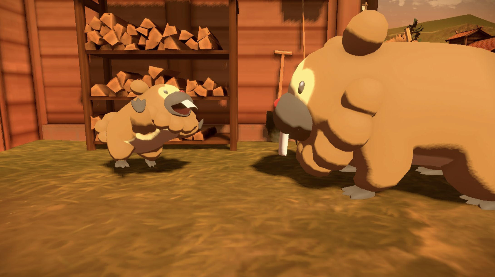
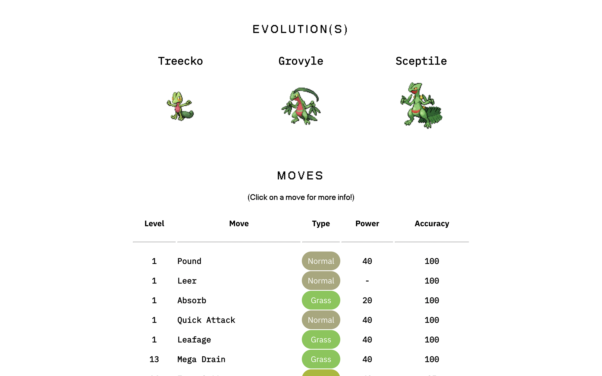
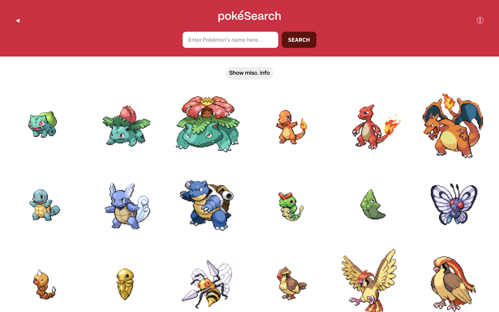
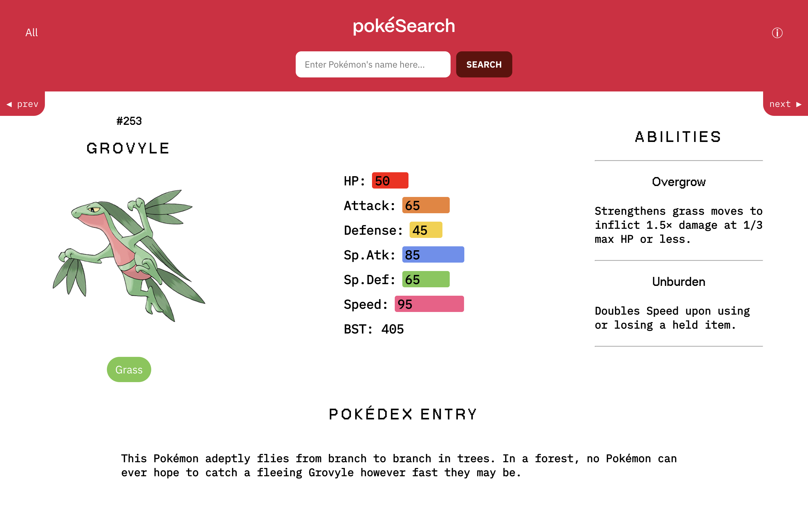

(Written on 4 Sept, edited / published on 20 Sept)
Currently about 2/3 done with my 15-hr long flight. Still have one layover and another 6 hours after that. My butt is hurting so bad and I'm bored out of my mind
so I thought I would take the time to document a project that I embarked on during the first half of
June.
Per the closing remarks of this post, I was itching to learn React to create a SPA (single page
app). At the same time
I wanted to learn how to do API calls and work with real, dynamic data rather than static,
manually-inputted data. I had also been playing Pokémon Legends: Arceus a lot then (one of their better
releases of late, especially after the lukewarm release of SwSh, but I digress). I found myself once again
engrossed in the background and characteristics of individual pokemon. So I knew that I wanted my React
project to somehow tie in with my rekindled affection for Pokémon. At the same time I was searching online
for API projects for beginners and stumbled upon PokéAPI, which happens to be quite a popular choice for
newbies, a "baby's first API call" if you will. So I decided, why not use it to create a pseudo-Pokédex of
sorts?

Since this was going to be my first React project, my focus was on simplicity; I wanted to capture just the
key aspects of the Pokémon itself (such as its typing(s), stats and abilities, but I eventually went on to
include more info, like its evolution line, Pokédex entry, other intersting trivia etc. once I got more
comfortable with React, but more on that later). While doing so, I wanted to design a clean user interface
while eliminating most of the cruft that comes with popular encyclopaedias like Bulbapedia1 and Serebii. Essentially a very
simple, pared back Pokédex.
I really should have documented more (or at all) during the process of building the app because I am
struggling to recall the exact steps I took. But I will try my best.
I'm also jumping ahead here, but (thank you past self) I archived earlier iterations of the site on Netlify; if you're interested
in viewing them, you can do so here:
I used the React tutorial from Scrimba for most of the process, which came in really handy especially with
hooks like useState and useEffect. Still not really good at those, but definitely a lot more familiar than
before.
Anyway. I had decided on these features to be implemented in the project:
For the most part, it was easy enough using 'axios get' to pull in the stats, typing, abilities etc. of each Pokémon from PokéAPI. I just had to think about how to present them in a neat manner. And to make it all work in a relatively seamless manner (switching between views, making sure data is passed and updated correctly with changes, etc.). I describe a few of the hurdles I ran into below.

Displaying evolutionary lines was particularly challenging:
Searching for Pokémon by name was also quite the struggle for a few reasons:
These are at least the more interesting hurdles that I faced. The rest simply involved me getting comfortable with React and JSX syntax, executing the layout I had in mind, and making it all work. Again, I wish I'd documented more...

This is probably my favourite section of the project, which is basically a list view of all 898 pokemon
released thus far. By default, it also presents the Pokémon's Pokédex number, name, sprite and typing(s),
but there is a toggle to hide all text/misc. info. So what you get is a long, scrollable list of colourful
Pokemon sprites. The viewport dynamically resizes according to screen size so it remains a beautiful
encyclopedia of both
official and unofficial (gen 6 onwards) sprites no matter the device. It's not perfect, however; the initial
plan was to have pagination for this section, to reduce loading times and eliminate long scrolling, but
keeping track of it in tandem with the “main” Pokémon view was a lot more than what I could handle at the
time.
If you refer back to the list above, all but one of the features were successfully implemented; the last one
I wanted to incorporate was a small section outlining the Pokémon's usage and viability in competitive
play (from the likes of VGC and Smogon), but I could not access the endpoints of what few relevant APIs were
publicly available due to a CORS error. After hours of debugging I still wasn't able to resolve this
unfortunately, but I plan to continue looking into this in the future.
Still, overall, I'm pretty happy with how this project turned out, so much so that I decided to get a custom
domain for it. It's now live on pokesearch.xyz.

This project definitely went a lot further than how I first imagined it—I was constantly excited, envisioning and implementing
new features, pushing my ideas as far as I could with respect to how much I learnt up to that point. It
could use a lot more polish, but I had fun experimenting with React and building interfaces with CSS. It’s
nice to just put something out there, especially something that I would personally use myself for quick lookups of Pokémon stats/abilities or to read the nifty Pokédex entries. I surprised myself with just how far interest can go; if you're really interested, curious or passionate about something, there's this real inclination to dig deep and go for it.
After this project, I went on to build my personal portfolio, switching from Netlify to Next.js in the
process, and worked with libraries like Framer motion to create more dynamic pages (re: my previous
post) but of course that’s for another time. Maybe I'll write about it when I fly back from the US in a few
months time. Because it seems like the only times I feel like documenting these things for an online blog
post that virtually nobody reads is when I have absolutely nothing else to do. A bad habit for sure. We’ll
see.
Other rough notes on PokéAPI:
But it's hard to imagine a more comprehensive dataset of Pokemon that is publicly available. And I really appreciate that it exists! APIs are so cool.
1. Coincidentally, Bulbapedia was broken for a large part of the development period of this project, so there really wasn't a better time to start the project. ↩︎
❉︎ return to notes ⁖ return to main